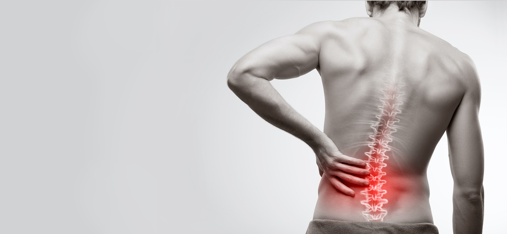
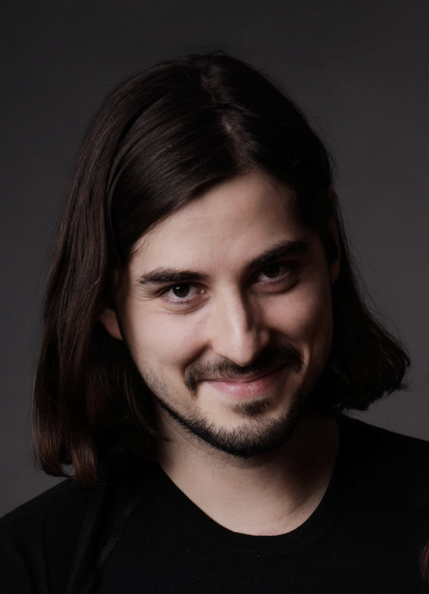

Fascie: Přehlížená tkáň, která řídí náš pohyb i bolest
Dlouhé roky se věřilo, že za bolestí pohybového aparátu stojí výhradně svaly, klouby nebo kosti. Moderní věda a výzkum posledních let však ukázaly, že klíč k drtivé většině chronických potíží leží jinde, a to ve fasciálním systému.
Co je to fascie?
Fascie je souvislá síť vazivové tkáně, která jako pavučina proplétá a obaluje každý sval, orgán, cévu i nerv v těle. Dává nám tvar, drží orgány na svém místě a zajišťuje, že po sobě jednotlivé struktury při pohybu hladce kloužou.
Co odhalil moderní výzkum fascií?
Výzkumy potvrdily, že fascie obsahuje až 6× více receptorů bolesti a polohocitu než samotné svaly. Mnohé „svalové“ bolesti tak ve skutečnosti pramení z fasciální sítě.
Jak fascie reaguje?
Při úrazu, operaci, přetížení nebo dlouhodobém stresu fascie ztrácí svou pružnost, vysychá a „slepí se“. Tento tah se pak řetězí a může vyvolat bolest na úplně druhém konci těla.
Jaká je souvislost s vnitřními orgány?
Věda dnes jasně popisuje vzájemné mechanické propojení mezi fasciemi a obaly vnitřních orgánů či nervových vláken. To vysvětluje, proč uvolnění fascií tak účinně pomáhá např. při refluxu nebo dýchacích a nervových potíží.
Co to pro nás znamená?
Díky těmto objevům je dnes možné cíleně uvolnit ztuhlá místa a vrátit tkáním jejich přirozenou funkci – bez nutnosti farmakologické léčby nebo invazivních zákroků.
Jako fyzioterapeut se specializuji na hloubkovou práci s fasciálním systémem.
Pomáhám při chronických bolestech kloubů, potížích s nervy i dalších tělesných problémů tam, kde běžná péče nestačí.
Služby
Čím se zabývám a co pro vás můžu udělat
Dlouhodobé i akutní bolesti kloubů, svalů, šlach a vazů
Řešení bolestí, zatuhnutí a omezeného rozsahu pohybu tam, kde běžné masáže či cvičení přinášejí jen dočasnou úlevu. Výrazného zlepšení lze dosáhnout i u artrotických stavů a zánětů šlach.
Nervové obtíže
Pomohu vám zbavit se problémů spojených s útlaky nervů a výhřezy plotének jako jsou vystřelující bolesti, slabost nebo mravenčení v rukách či nohách. Skvělých výsledků dosahuji také u syndromu karpálního tunelu a u migrén.
Orgánové obtíže a viscerální systém
Uceleným fasciálním postupem dokáži příznivě ovlivnit také jícnový reflux, zácpu, dušnost a další omezení spojená s dýcháním a trávením.

O mně
Jmenuji se Jan Vlasák a vystudoval jsem obor Fyzioterapie na Západočeské univerzitě v Plzni.
Už během studia jsem cítil, že tím mé zkoumání lidského těla skončit nemůže, protože zůstávalo příliš mnoho nezodpovězených otázek. Absolvoval jsem proto řadu odborných kurzů a školení (jejich přehled najdete níže). Všechny byly velmi přínosné, ale skutečný průlom v mé praxi nastal až s hlubším poznáním fasciálního systému skrze koncept italské fasciální terapie Stecco. Dosáhl jsem v tomto směru nejvyšší úrovně vzdělání a je mi dodnes velikou inspirací.
Mým cílem bylo od začátku hledat a odstraňovat skutečné příčiny potíží, nikoliv jen nabízet dočasnou úlevu od symptomů. Jsem vděčný, že mohu ve své každodenní praxi tyto hodnoty naplňovat lépe než kdy dřív.
Jak probíhá péče?
Diagnostika
Neřeším jen místo, kde to právě bolí. Probereme stará zranění, operace i zdánlivě nesouvisející potíže. Bolest ramene může mít svou skutečnou příčinu v dávném úrazu kotníku nebo v jizvě na břiše.
Terapie
Pomocí speciálních hmatů působím přímo na klíčová místa ve fasciální síti. Cílem je uvolnit slepená a ztuhlá místa, obnovit kluznost jednotlivých vrstev a vrátit tkáním jejich přirozenou pružnost a funkci.
Kontrola
Po uvolnění konkrétních bodů hned ověřujeme změnu v rozsahu pohybu i v intenzitě bolesti. Terapie je tak od první chvíle měřitelná a lze zaznamenat její přínos
Nevíte, zda je pro vás fasciální terapie vhodná? Napište mi krátkou SMS nebo zprávu na WhatsApp a probereme to.
Napište miDalší vzdělání a kurzy
Fyzioterapie, pohyb a prevence
Stecco fasciální manipulace 4
Rehaeduca
Stecco fasciální manipulace 3
Rehaeduca
Stecco fasciální manipulace 2 - Masterclass
Rehaeduca
Stecco fasciální manipulace 1 - Masterclass
Rehaeduca
Koordinačně zátěžová kinezioterapie
Rehaeduca
Evidence-based přístup k jizvám a viscerálním srůstům
Rehaeduca
DNS (dynamická neuromuskulární stabilizace), část A
Centrum pohybové medicíny Pavla Koláře
ACT (Akrální koaktivační terapie)
Rehaspring
Metoda Ludmily Mojžíšové
u Mgr. Jany Jedličkové a Hany Volejníkové
Kloubní mobilizace páteře a končetin
u Mgr. Maji Špiritović
Manuální lymfodrenáž
Dexter Academy
Metoda Ludmily Mojžíšové
Ru Mgr. Jany Jedličkové a Hany Volejníkové
Metoda Neurac (závěsný systém Redcord)
Redpoint Clinic
Terapie ruky a techniky dlahování
Česká společnost terapie ruky
Dornova metoda
Eduspa College
Instruktor fitness
PaedDr. Petr Tlapák
Instruktor nordic walking
Mgr. Miroslava Míra
Psychoterapie
Psychoterapeutické minimum
Český institut biosyntetické psychoterapie
Tension & Trauma Releasing Exercises (TRE)
Fokus Praha
Ceník
Vážím si vašeho i svého času. Pokud se nemůžete dostavit, dejte mi prosím vědět alespoň 24 hodin předem (SMS, hovorem či e-mailem), aby mohl termín využít jiný zájemce. Při pozdější omluvě nebo nedostavení se bude při další návštěvě účtována plná cena sezení.
Individuální fyzioterapie - 60 minut
1600 Kč
Individuální fyzioterapie - 90 minut
2000 Kč
Kontakt
Objednejte se k návštěvě. Prefetuji kontakt přes WhatsApp nebo sms.
Kde mě najdete?
Černokostelecká 909/14, Praha 10 - Strašnická
Napiš mi
+420 735 645 165
vlasak.fyzio@gmail.com